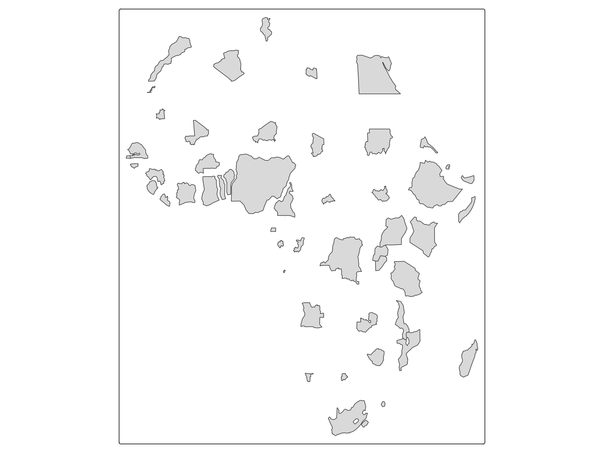
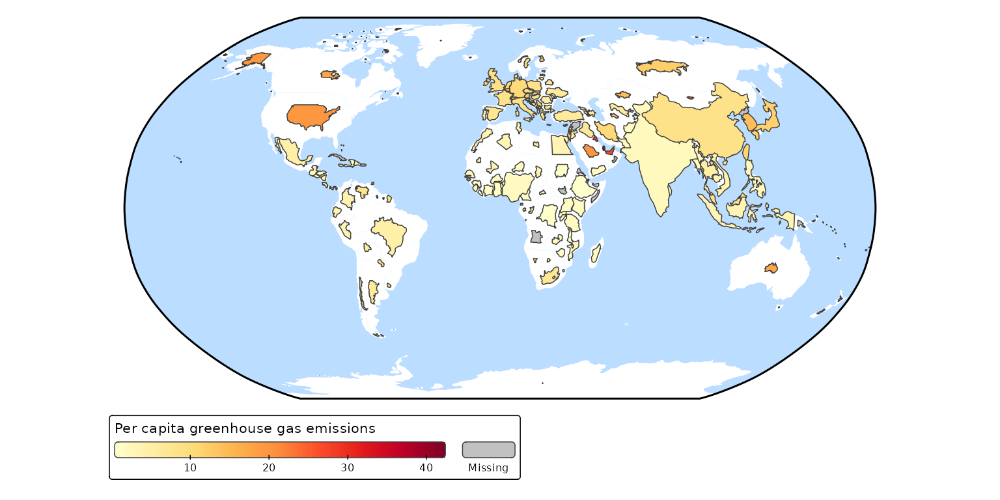

Non-contiguous cartograms
Africa = World[World$continent == "Africa", ]
tm_shape(Africa, crs = "+proj=robin") +
tm_cartogram_ncont(size = "pop_est", options = opt_tm_cartogram_ncont())
#> Cartogram in progress...
tm_shape(Africa, crs = "+proj=robin") +
tm_cartogram_ncont(size = "pop_est",
fill = "inequality",
fill.scale = tm_scale_continuous(values = "cols4all.pu_gn_div", values.range = c(0, 0.5)),
fill.legend = tm_legend(""),
options = opt_tm_cartogram_ncont()) +
tm_text("name", options = opt_tm_text(point.label = TRUE)) +
tm_title("Income inequality (Gini coefficient)")
A non-contiguous cartogram of the World. The countries are resized relative to population. The colors indicate carbon footprint.
tm_shape(World, crs = "+proj=robin") +
tm_polygons(fill = "white", col = NULL) +
tm_cartogram_ncont(
size = "pop_est",
fill = "footprint",
fill.legend = tm_legend("Per capita greenhouse gas emissions",
orientation = "landscape", bg.color = "white"),
fill.scale = tm_scale_continuous(values = "brewer.yl_or_rd",
values.range = c(0, 1))) +
tm_layout(earth_boundary = TRUE,
frame = FALSE,
earth_boundary.lwd = 2,
bg.color = "#bbddff",
space.color = "white")
#> Cartogram in progress...